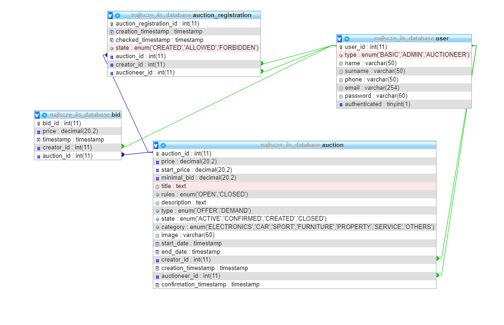

Aukce: prodej a nákup zboží a majetku prostřednictvím dražby
- Autori
- František Sabol
xsabol03@stud.fit.vutbr.cz -
Tvorba a správa užívateľov, zakúpenie domény , návrh databázy, registrácia a potvrdzovanie účastníkov aukcií.
- Matúš Bičanovský
xbican03@stud.fit.vutbr.cz -
Tvorba frontendu a html šablón, css úprava , úprava užívateľských dát.
- Richard Hrmo
xhrmor00@stud.fit.vutbr.cz -
Tvorba a správa aukcií, implementácia databázy, prihadzovanie na aukcie.
- URL aplikace
- https://najlepsiaponuka.xyz
Užívatelia systému pre testovanie
Heslo admina je také z dôvodu aby sa nám tam niekto nechcený neprihlásil kedže v dobe odovzdania sme mali cez 300 unikátnych navštívení stránky
| Login | Heslo | Role |
|---|
| admin@najlepsiaponuka.xyz | adminxbican03 | Administrátor |
| licitator@najlepsiaponuka.xyz | licitator123 | Licitátor |
| user@najlepsiaponuka.xyz | user123 | Užívateľ |
Implementace
Nami vytvorený informačný systém je implementovaný v jazyku Python(verzia 3.8.0) s použitím frameworku Flask(verzia 2.0.2).
V našej implementácii používame návrhový vzor Mode-View-Controler.
Model
Modely využívame na zapúzdrovanie reálnych údajov, ako sú užívatelia a informácie o nich, aukcie a potrebné dáta k nim. Modely sú implementované v models.py súbore.
View
Jedná sa o html šablóny realizujúce frontendovú časť informačného systému , spoločne s css súborom na ich dekoráciu , sú uložené v zložke /templates.
Tieto html šablóny obsahujú aj možnosti frameworku Flask kde sa v html kóde nachádzaju príkazy na dinamické generovanie obsahu rovnako ako získavanie konkrétnych dát z databázy.
Controler
Je implementovaný v koreňovom adresári v zložkách s príponou .py , primárne riadenie celého informačného systému je implementované v app.py , ktoré sa stará o zobrazovanie všetkých dát a informácii užívateľovi.
Databáze

Inštalácia
- Archív je potrebné rozbaliť do cieľovej zložky. Nainštalovať potrebné knižnice a balíky v prostredí spúštania aplikácie.
- Softwarové požiadavky : knižnice pomocou (pip install -r requirements.txt), verzia Python 3.8. MySQL databáza.
- Pred spustením aplikácie je potrebné nakonfigurovať databázu. A to odkomentovaním riadku(číslo 21), príkazu setup_db() v súbore run.py, ktorý je potrebné spustiť v cieľovom adresári.
- Spustenie aplikácie: Odkomentovanie riadku(číslo 22) v súbore run.py a spustením tohto súboru v cieľovom adresári.